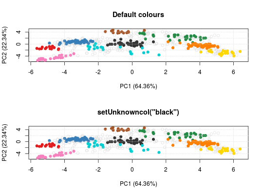

These functions allow to get/set the colours and point character that are used when plotting organelle clusters and unknown features. These values are parametrised at the session level. Two palettes are available: the default palette (previously Lisa's colours) containing 30 colours and the old (original) palette, containing 13 colours.
setLisacol() getLisacol() getOldcol() setOldcol() getStockcol() setStockcol(cols) getStockpch() setStockpch(pchs) getUnknowncol() setUnknowncol(col) getUnknownpch() setUnknownpch(pch)
characters or NULL,
which sets the colours to the default values.numeric or NULL,
which sets the point characters to the default values.character or NULL,
which sets the colour to #E7E7E7 (grey91),
the default colour for unknown features.numeric vector of length 1 or NULL,
which sets the point character to 21, the default.The set functions set (and invisibly returns)
colours. The get functions returns a character
vector of colours. For the pch functions, numerics
rather than characters.
## defaults for clusters getStockcol()#> [1] "#E41A1C" "#377EB8" "#238B45" "#FF7F00" "#FFD700" "#333333" "#00CED1" #> [8] "#A65628" "#F781BF" "#984EA3" "#9ACD32" "#B0C4DE" "#00008A" "#8B795E" #> [15] "#FDAE6B" "#66C2A5" "#276419" "#CD8C95" "#6A51A3" "#EEAD0E" "#0000FF" #> [22] "#9ACD32" "#CD6090" "#CD5B45" "#8E0152" "#808000" "#67000D" "#3F007D" #> [29] "#6BAED6" "#FC9272"getStockpch()#> [1] 19 1 15 0 17 2 18 5 7 9 13 3 4 8## unknown features getUnknownpch()#> [1] 21getUnknowncol()#> [1] "#E0E0E0"## an example library(pRolocdata) data(dunkley2006) par(mfrow = c(2, 1)) plot2D(dunkley2006, fcol = "markers", main = 'Default colours') setUnknowncol("black")#> Error in assign("unknowncol", col, envir = .pRolocEnv): cannot change value of locked binding for 'unknowncol'getUnknowncol()#> [1] "#E0E0E0"setUnknowncol(NULL)#> Error in assign("unknowncol", unknowncol, envir = .pRolocEnv): cannot change value of locked binding for 'unknowncol'getUnknowncol()#> [1] "#E0E0E0"getStockcol()#> [1] "#E41A1C" "#377EB8" "#238B45" "#FF7F00" "#FFD700" "#333333" "#00CED1" #> [8] "#A65628" "#F781BF" "#984EA3" "#9ACD32" "#B0C4DE" "#00008A" "#8B795E" #> [15] "#FDAE6B" "#66C2A5" "#276419" "#CD8C95" "#6A51A3" "#EEAD0E" "#0000FF" #> [22] "#9ACD32" "#CD6090" "#CD5B45" "#8E0152" "#808000" "#67000D" "#3F007D" #> [29] "#6BAED6" "#FC9272"getOldcol()#> [1] "#E41A1C" "#377EB8" "#4DAF4A" "#984EA3" "#FF7F00" "#FFFF33" "#A65628" #> [8] "#F781BF" "#999999" "#333333" "#A021EF" "#008A45" "#00008A"